Visualization
Decision System
"I did not just design charts. I designed the decision infrastructure behind better charts."
This is a decision-support tool for teams designing high-load dashboards in observability, monitoring, and analytics. It turns chart selection — an open-ended, cognitively expensive debate — into a guided 4-step decision flow that covers 16 visualization families and 144 selectable patterns.
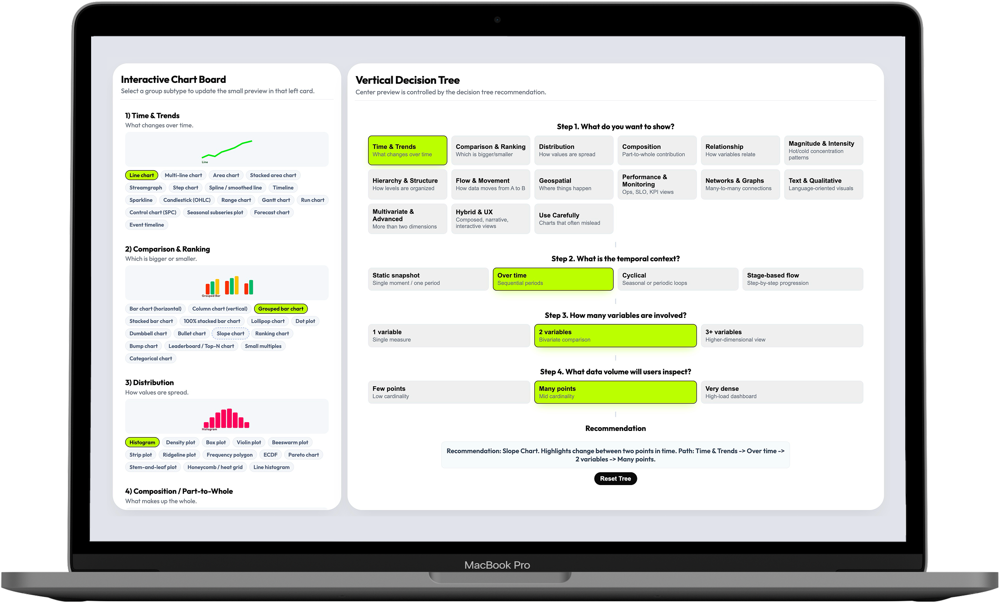
Teams had charts. They didn't have a way to choose the right one.
Dashboard teams in observability, monitoring, and analytics face a specific kind of cognitive load: they need to select visualization patterns that are correct not just visually, but for the data shape, the user intent, the temporal context, and the operational stakes. Every decision they make affects whether their users can detect risk, interpret change, and act fast — or get slowed down by a misleading chart.
The resources available to help with that decision were scattered. Books, articles, library documentation, opinionated framework guides — each helpful in isolation, each partial. Teams had access to hundreds of chart examples but no structured decision logic to navigate them.
An analyst designing a monitoring dashboard had narrowed down three candidate chart types — but none of the available references addressed how temporal resolution, data density, and comparison goals interact. The decision ended up being subjective, and the first version needed rework after the first real-world test.
The problem was not a lack of chart options. It was a lack of decision logic. And the consequence wasn't aesthetic — it was operational.
I mapped the fragmented visualization landscape before designing anything
The discovery phase was a competitive landscape review across the full spectrum of data visualization guidance — books, articles, framework documentation, library docs, opinionated references. I wasn't looking for chart examples: I was looking for structural gaps — which parts of the decision problem had no good answer anywhere, and where existing guidance broke down under real dashboard complexity.
What I found confirmed the systemic nature of the problem. Most references were helpful for isolated chart selection but failed at the reasoning layer: they explained what a heatmap is, not when to choose a heatmap over a scatter plot given a specific data density and time window.
The right starting frame was not "what chart is missing from this collection?" It was "what decision model is missing from all of them?" That reframe shaped everything that followed.
- Competitive landscape review (articles, books, framework docs, library documentation)
- AI-assisted literature synthesis across multiple sources
- Structural gap analysis: where existing guidance broke down under real dashboard complexity
- Research positioning: visualization selection as a systems problem, not a reference problem
I built the taxonomy from first principles, organized by decision intent
Rather than adapting an existing chart library's organization, I reconstructed the taxonomy from scratch — grouping chart types by what they're used for rather than what they're called in a specific framework. The result was 16 visualization families covering the full range of dashboard-relevant patterns: comparison, trend, distribution, relationship, part-to-whole, flow, geospatial, density, and more — each with its own set of selectable subtypes and edge cases.
The 144 selectable patterns weren't just a count — they were a coverage decision. I conducted API feasibility analysis of chart behaviors across real data conditions to understand which patterns were reliable under high-load environments and which failed under density or time constraints. AI-assisted clustering helped identify overlaps and edge cases across reference sources that manual review would have missed.
I organized the taxonomy by decision intent, not by library convention. This meant teams with different charting libraries and different codebases could still use the same taxonomy to reason about their choices — the framework was tool-agnostic by design.
- Complete visualization taxonomy: 16 families, 144 selectable chart patterns and data views
- Taxonomy organized by decision intent (not library naming convention)
- Pattern coverage map: which chart types work under which density, temporal, and variable conditions
- "Use Carefully" family: risky/misleading patterns explicitly labeled and explained
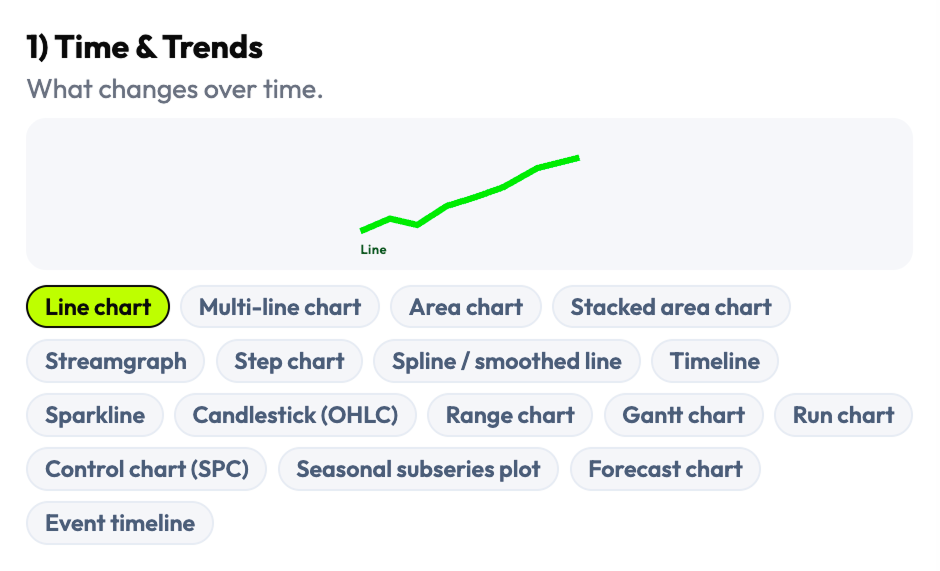
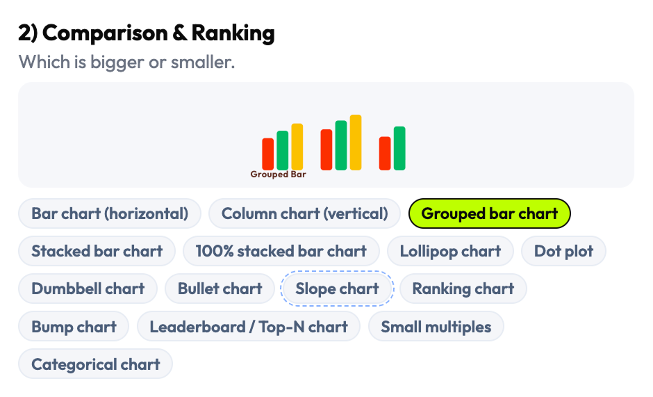
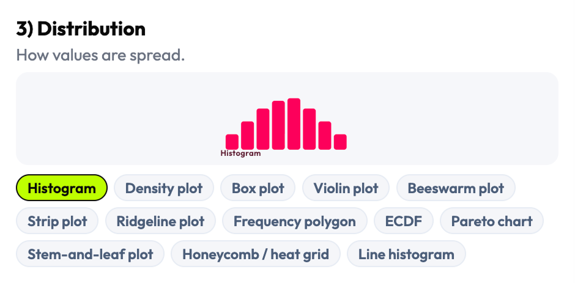
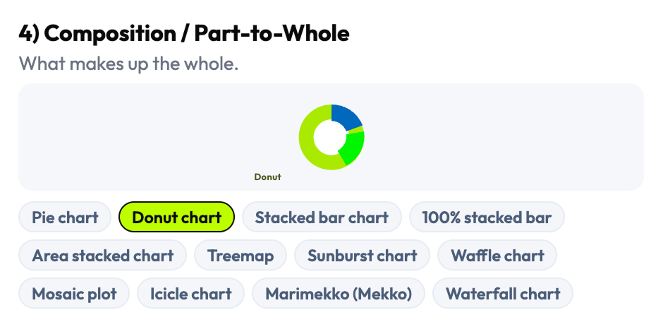
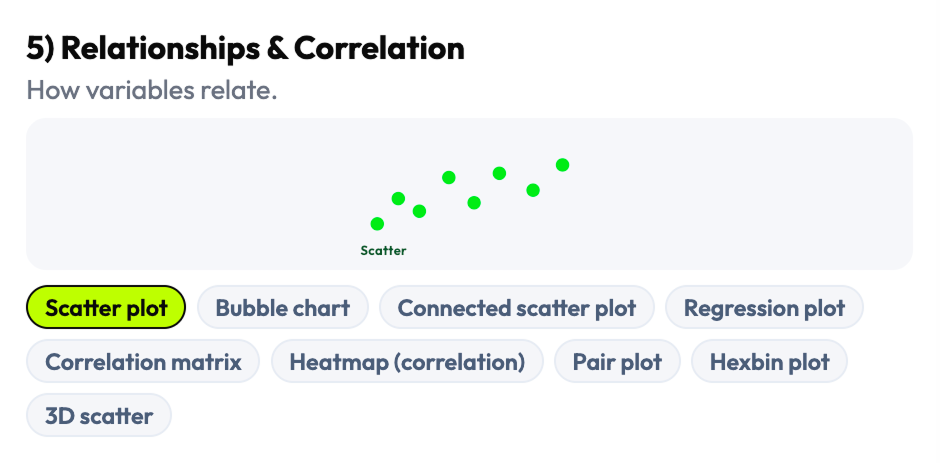
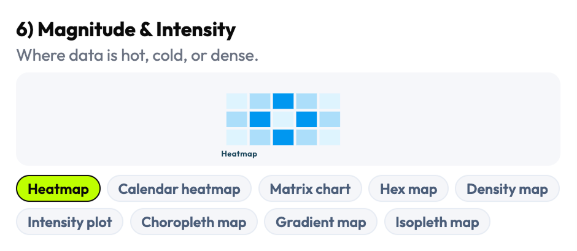
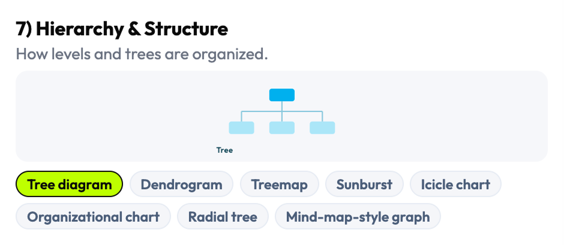
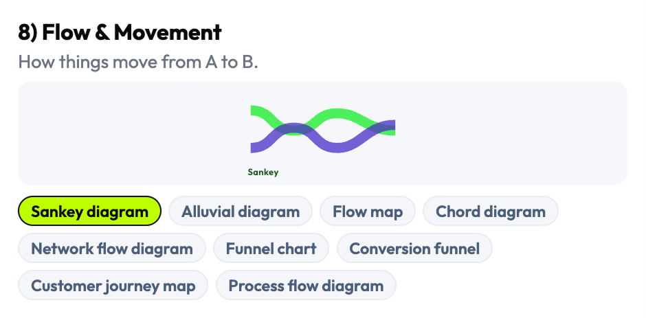
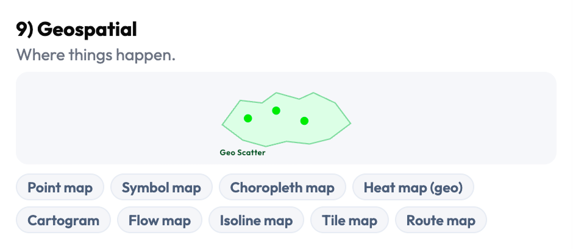
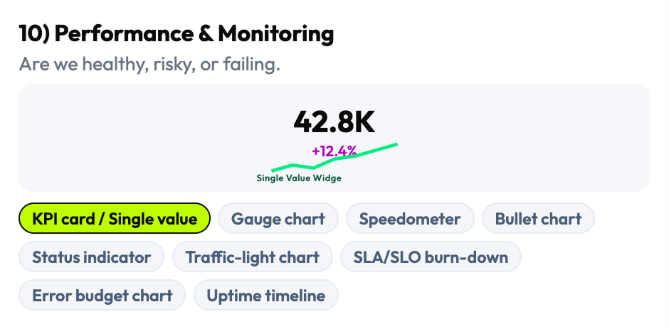
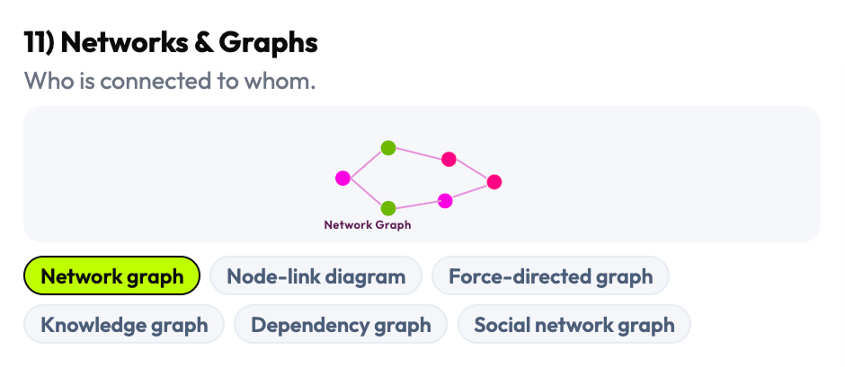
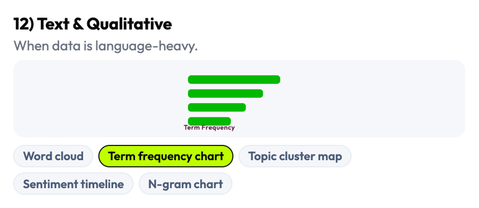
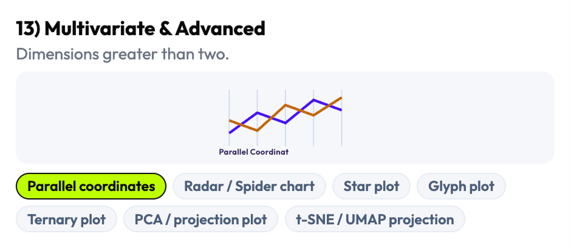
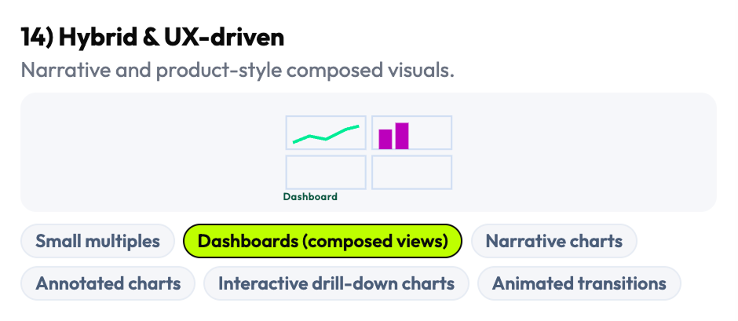
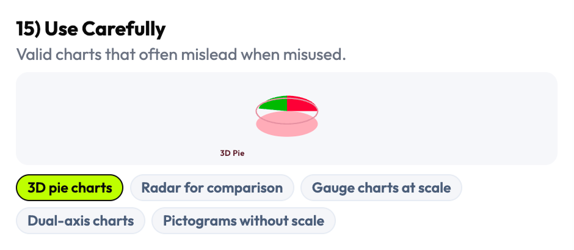
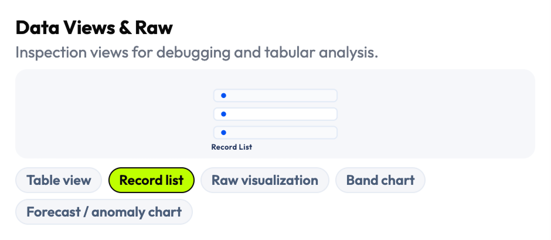
I chose four universal variables that work across every dashboard context
The decision model needed to work for every type of dashboard, every charting library, and every team composition — designers, engineers, analysts, and PMs. After mapping the full space of possible decision variables, I selected four that were universal, teachable, and cross-functional: What do you want to show? What is the temporal context? How many variables are involved? What data volume will users inspect? These four narrow the choice space from 144 patterns to a defensible recommendation in a single flow.
The 4-step model was not just a filter — it was a shared vocabulary. When design and engineering could frame a visualization decision through the same four questions, the conversation became structured and fast instead of opinionated and slow. The decision tree also encodes four operating rules that prevent common errors in high-load contexts: aggregate first, one visual one primary question, sampling for dense views, interactions only when they add value.
I chose universality over specificity. Variables tied to a specific domain or framework would have produced a sharper tool for a narrower audience — four universal variables produced a tool that works across observability, analytics, and operational contexts simultaneously.
- 4-step decision framework (Goal → Temporal context → Variables → Data volume)
- 4 embedded operating rules / heuristics
- Decision tree model converting visualization theory into actionable workflow
- Universal decision variables: legible to designers, engineers, analysts, and PMs
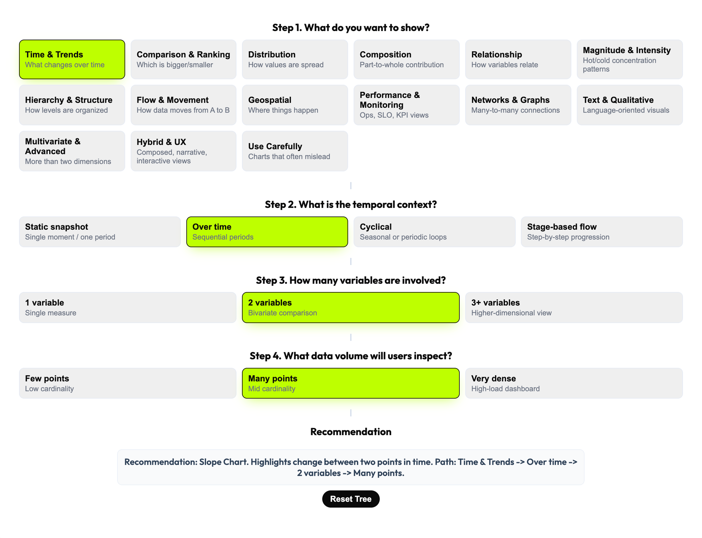
I designed a three-layer product that recommends first, lets you explore second
The central product decision was architectural: rather than a browsable gallery that users search manually, the default experience is a recommendation. The decision tree drives the user toward a specific chart pattern with an explanation of why it fits — and the taxonomy board remains available for expert exploration when the recommendation needs validation or comparison. This structure reduces cognitive load without removing professional control.
The recommendation layer does more than output a chart name. It explains the reasoning path — which decision variable triggered which filter, and why the recommended pattern fits the specific combination of goal, time, variables, and volume. Live preview lets the user see the recommended chart in context, making the tool useful not just for individual decisions but for cross-functional alignment sessions where teams need to discuss and validate choices in real time.
Most teams already had a chart library. What they lacked was a way to make the selection decision faster and more defensible. The recommendation layer addressed exactly that — it gave teams a defensible reasoning chain, not just a visual.
- Three-layer product architecture: taxonomy board (left) + decision tree (center) + recommendation/preview (right)
- "Recommend first, browse second" interaction model
- Recommendation with reasoning path (explains why each pattern fits the specific combination)
- Live preview layer: validates recommendation in context before implementation
- Working interactive prototype
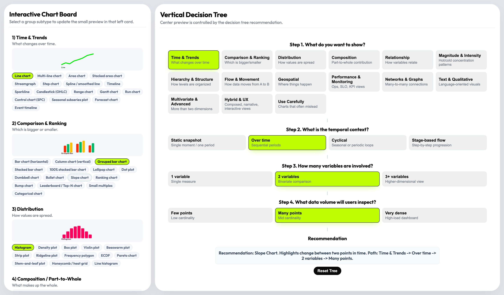
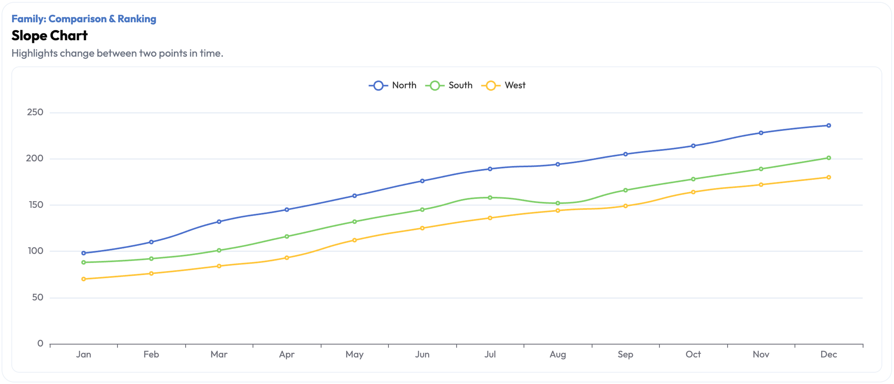
I included the unsafe patterns instead of pretending they don't exist
Many data visualization resources omit misleading chart types — pie charts for non-part-to-whole data, 3D charts that distort magnitude, dual-axis charts that create false correlations. I made the opposite decision: the "Use Carefully" family is explicitly part of the system, not excluded from it. Ignoring them doesn't prevent misuse — it just removes the governance layer that would help teams recognize and avoid the mistake.
The governance layer extends to four operating rules embedded in the system: aggregate first, one visual one primary question, use sampling for dense views, enable interactions only when they genuinely add value. These aren't style preferences — they're structural constraints that prevent a class of visualization failures common in high-load environments. Teams that adopt the system get the heuristics alongside the taxonomy.
A decision tool without governance is just a gallery with extra steps. The governance layer is what makes this a professional tool rather than an inspiration board.
- "Use Carefully" pattern family: misleading/risky chart types with explicit explanation of failure modes
- 4 operating rules / embedded heuristics: aggregate first, one visual one question, sampling for dense views, interactions only when needed
- Governance documentation: when each rule applies and what failure it prevents
- System framing: visualization selection as a product decision requiring guardrails, not aesthetic judgment
Six phases from fragmented landscape to decision infrastructure
Research & Landscape Mapping
Surveyed the full data visualization guidance landscape to identify structural gaps in existing decision frameworks.
AI-Assisted Synthesis
Used AI tools to cluster chart patterns, compare overlapping guidance, and accelerate coverage across fragmented sources.
Taxonomy Construction
Built 16 visualization families and 144 patterns from first principles — organized by decision intent, not library convention.
Decision Model Design
Defined 4 universal decision variables and designed the recommendation flow that converts them into a guided chart selection.
Interaction Design & Prototyping
Designed the three-layer product architecture and built a working interactive prototype with live preview capability.
Cross-Functional Review
Validated decision logic and recommendations with designers and frontend engineers to confirm practical defensibility.
From open-ended debate to guided decision infrastructure
Fragmented Guidance → Single Decision System
What had been scattered across dozens of books, articles, library docs, and framework references is now a single operational system. Teams no longer need to cross-reference multiple sources to reach a defensible chart decision.
Open-Ended Debate → Repeatable Workflow
Visualization selection moved from subjective, inconsistent team conversations to a structured 4-step flow that produces the same reasoning path regardless of who runs it. Decision quality doesn't depend on the most experienced person in the room.
Shared Language Across Roles
Designers, engineers, analysts, and PMs can now discuss visualization choices through the same four variables — Goal, Temporal context, Variables count, Data volume. Cross-functional alignment conversations got faster and more concrete.
Governance Built In
The "Use Carefully" family and 4 operating rules give teams explicit guardrails against the most common misleading visualization choices in high-load environments. The system teaches as it recommends.
The metrics describe a knowledge compression: 16 families and 144 patterns is the full breadth of the decision space, navigable in 4 steps. But the more significant outcome is structural — chart selection stopped being a judgment call and started being a workflow. In high-load environments where visualization mistakes have operational consequences, the difference between a subjective debate and a guided decision system is the difference between a risk and a process.
Three things this project taught me
The problem is never the chart. It's the decision behind it.
Teams that struggle with data visualization rarely have the wrong chart library or the wrong examples in front of them — they have the wrong frame for the decision. Reframing the problem from "which chart?" to "what decision am I trying to support?" is the move that makes everything else tractable. The strongest systems thinking I do is at the level of problem framing, before any screen exists.
Tools that govern are more valuable than tools that inspire.
Inspiration resources produce better aesthetics — governance systems produce fewer mistakes. In high-stakes environments — observability, analytics, operational products — reducing the risk of a wrong decision is often more valuable than surfacing a good option. Designing for governance rather than inspiration was the framing that made this tool commercially relevant instead of just professionally interesting.
Universal beats specialized when the decision space is large.
I could have built a more specialized tool — tuned for one domain, one charting library, one team structure. Instead I optimized for universality: four variables that work across every context. When you design decision infrastructure, the reach of the framework matters more than the precision of any single recommendation.
AI accelerated research coverage. The decision architecture was mine.
This project used AI as a research amplifier — not to make design decisions, but to expand coverage across a fragmented knowledge landscape faster than manual research could. The taxonomy, the decision model, and the governance layer were built from my judgment.
Task: Scanned and synthesized data visualization guidance across books, articles, framework documentation, and reference material.
Outcome: Faster coverage of a large, fragmented landscape — surfaced patterns and gaps that manual review would have taken significantly longer to map.
Human/AI split: I directed the research scope and evaluated all synthesis for quality and relevance; AI accelerated the scanning and comparison.
Task: Clustered chart patterns and edge cases across multiple overlapping sources to identify taxonomy structure.
Outcome: Identified where resources disagreed, where categories were missing, and where chart types were mislabeled in common references.
Human/AI split: Clustering was AI-assisted; all taxonomy structure decisions — what counts as a family, how families are grouped — were mine.
Task: Compared overlapping and conflicting guidance from multiple data visualization references.
Outcome: Identified structural gaps — areas where the literature had no consensus and I had to make an original architectural decision.
Human/AI split: AI surfaced the conflicts; I resolved them through the taxonomy and decision model design.
I design decision systems for data-heavy products
Turning fragmented expert knowledge into structured decision infrastructure that teams can use reliably — that's the kind of design work I do. Analytics, observability, operational dashboards, or any product where data interpretation drives user action.
If the cost of a wrong decision in your product is measurable, let's talk.